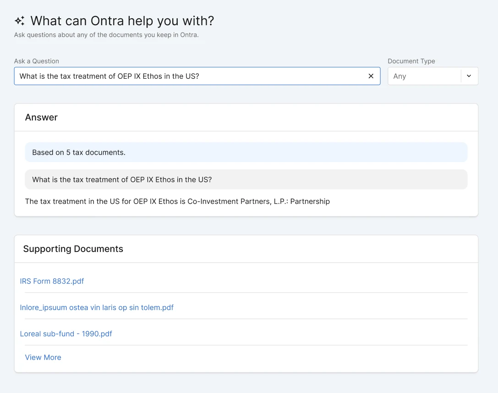
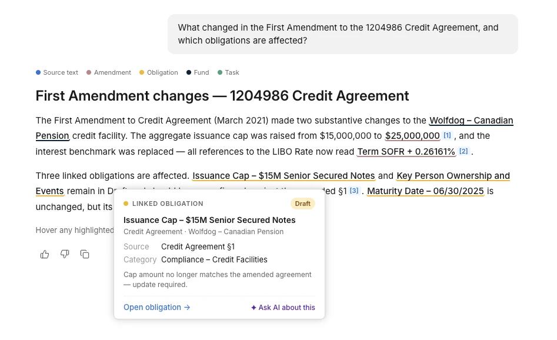
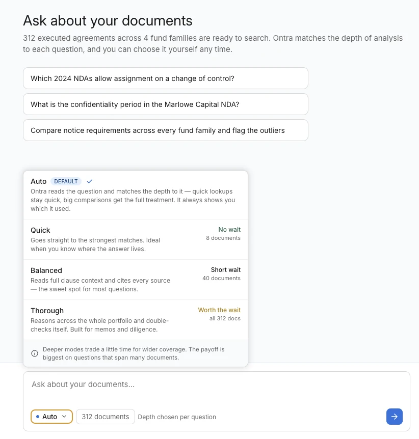
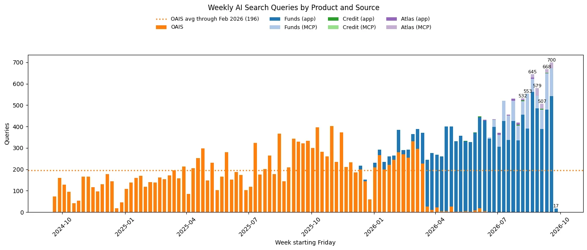
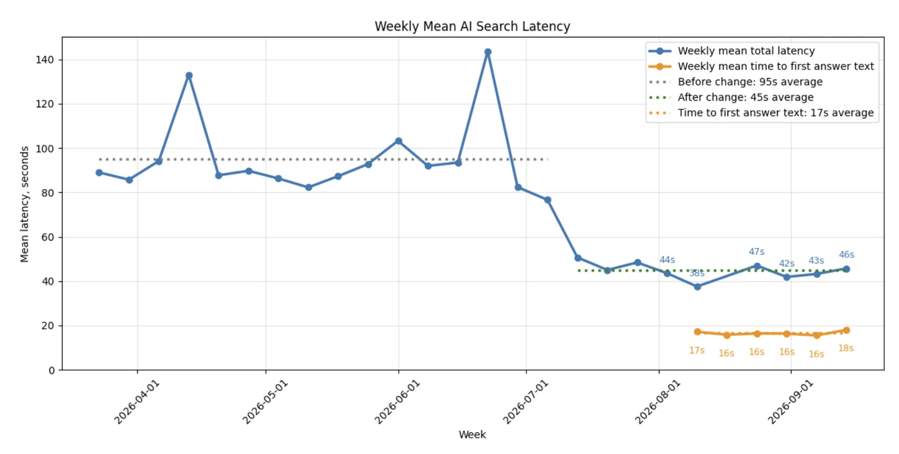
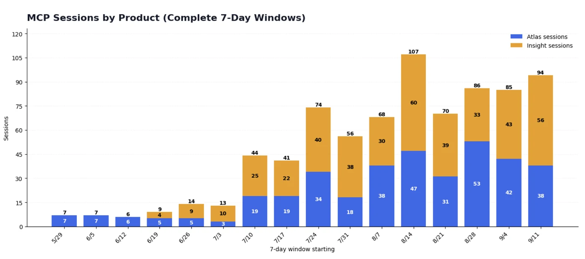

Khoa D. Pham, Senior UX Designer at Ontra. Use the arrow keys or the buttons below to move through the slides.
Obligations AI Search was the legacy product that allowed users to ask one question and get one answer about their legal obligations in their documents.

The problem: customers needed "clearer visibility into the sources and citations behind the answers" so they could verify them quickly, but the old search only listed files. It was also "too slow," which customers said was "breaking my workflow."

The problem: speed and coverage pulled against each other. Quick lookups felt "too slow," while answers to broad questions were often "incomplete, missing key obligations or provisions."
I proposed Auto as the default: Ontra matches the depth to each question and always shows which level it used. People can also pick Quick, Balanced, or Thorough themselves, and retry with one click after a weak answer.
Each level says how long it takes and how many documents it reads. Our evaluation showed that more effort made answers more complete but not more correct, so the menu presents deeper modes as more time for wider coverage, not better accuracy.
Status: in review.

Weekly queries hit all-time highs, driven by Funds. MCP, Ontra's tool connection for outside AI apps, grew from a handful of sessions a week to about 90.

Cutting latency by more than half did more for the experience than any single screen.

